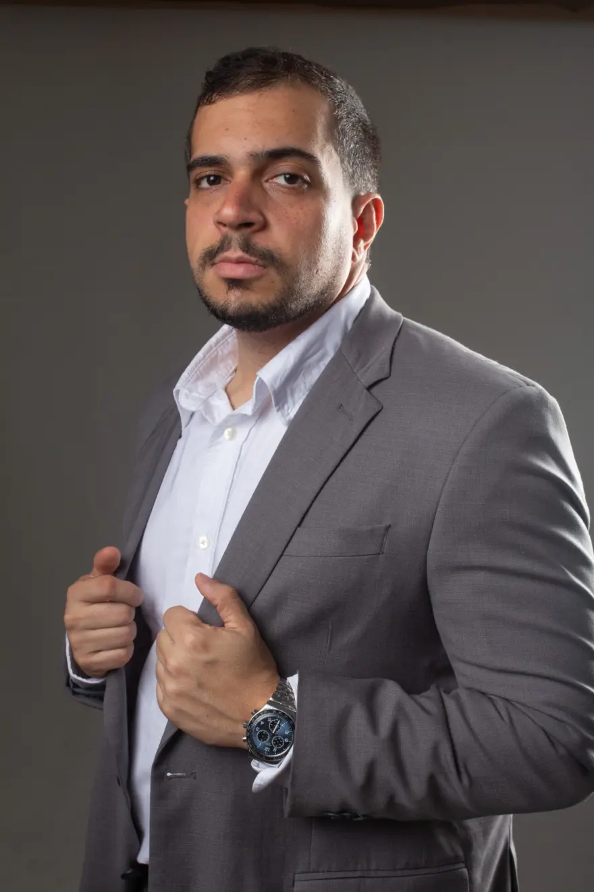
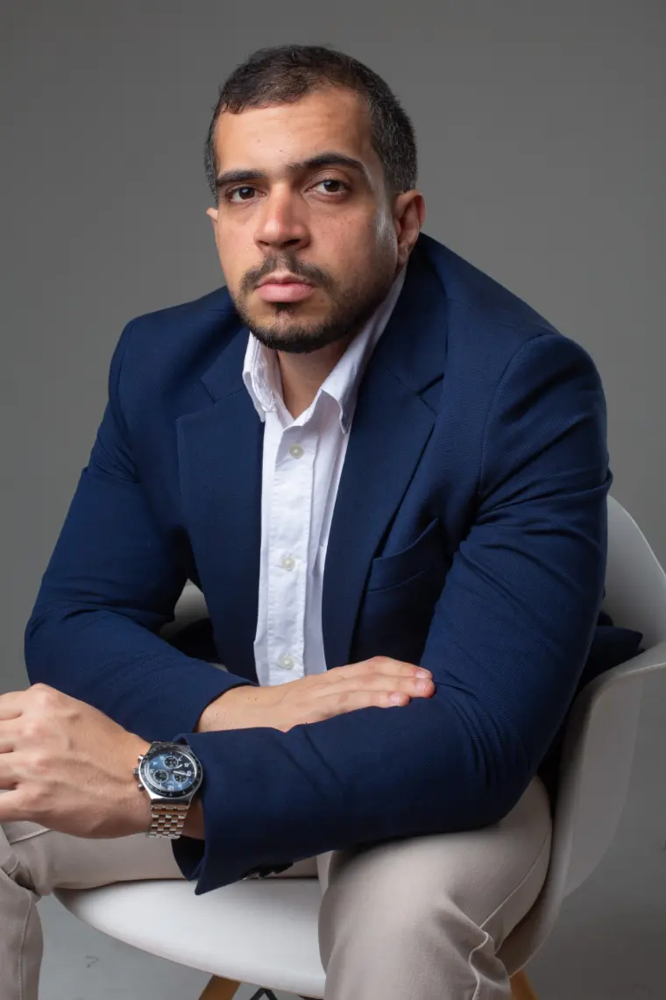
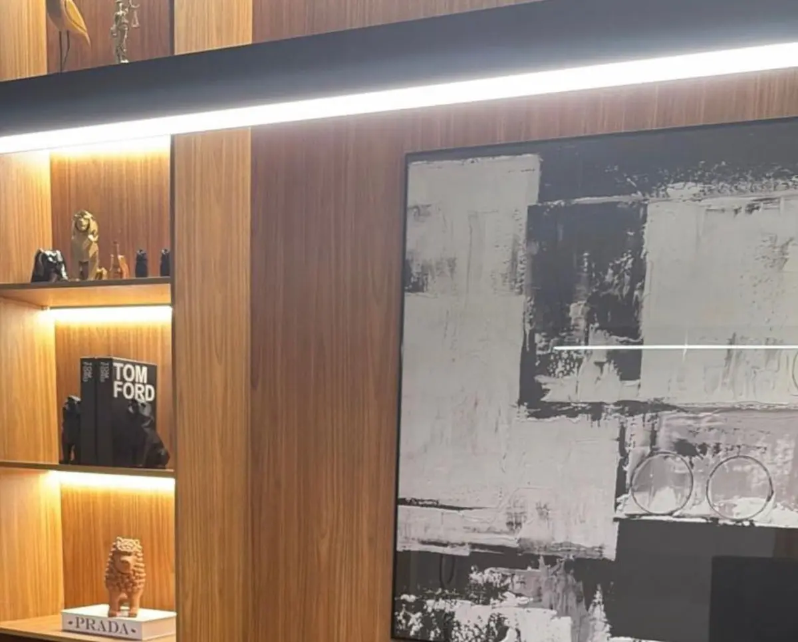
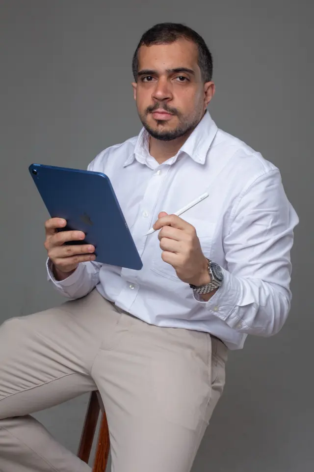

Caiu de moto, botou placa e voltou a trabalhar?
Quem ficou com sequela de acidente pode ter um valor todo mês, pago junto com o salário. Vale pra acidente de moto, de trabalho, queda e até em casa.
Falar sobre o meu acidenteEscritório de advocacia previdenciária em Carpina, na Zona da Mata de Pernambuco. A gente cuida do INSS de quem trabalha no Nordeste inteiro e explica o seu direito antes de você decidir qualquer coisa.

Seu caso é um desses?
Quem ficou com sequela de acidente pode ter um valor todo mês, pago junto com o salário. Vale pra acidente de moto, de trabalho, queda e até em casa.
Falar sobre o meu acidenteO salário-maternidade é da mãe que contribuiu, trabalhou de carteira ou na agricultura. Em muitos casos ainda dá pra pedir depois que o bebê nasceu.
Falar sobre o meu casoNegativa do INSS muitas vezes vem de laudo só com o CID ou de conta de renda errada. A gente cuida do BPC da criança e do adulto autistas, e do idoso de baixa renda.
Falar sobre o BPCQuando a doença afasta do trabalho e o INSS nega, corta ou não prorroga, dá pra procurar a Justiça. O mesmo vale pra aposentadoria por incapacidade.
Falar sobre o meu benefícioO escritório também cuida de aposentadoria por idade, rural e por incapacidade. Se o seu caso não está aí em cima, chama no WhatsApp mesmo assim.
Nordeste
Muita gente daqui trabalhou a vida toda sem saber o que o INSS deve a ela. Chega no escritório o cortador de cana que machucou a mão na usina e a mãe que corre atrás do BPC do filho.
O escritório é daqui e trabalha pra essa gente. Você começa pelo WhatsApp, de qualquer cidade do Nordeste, manda os documentos por foto e acompanha o caso pelo celular. Se preferir vir, a porta é na Rua Djalma Dutra, em Carpina.
PE · PB · RN · AL · SE · BA · CE · PI · MA

Como funciona
Antes de chamar
Não. A conversa, os documentos e o contrato vão pelo WhatsApp. Quem mora longe, em outro estado do Nordeste, faz tudo pelo celular.
A primeira conversa é pra entender o que aconteceu. Como funciona o honorário a equipe explica no WhatsApp, antes de qualquer assinatura. Nada é cobrado sem você saber antes.
O escritório tem endereço na Rua Djalma Dutra, 123, em Carpina, e o advogado é o Eduardo Henrique Mara Rodrigues, OAB/PE 64.717, que você confere no site da OAB-PE. As avaliações no Google são de cliente real. O escritório nunca pede senha por mensagem.
Não. A negativa do INSS é o que abre o caminho pra ação judicial. Na Justiça, quem examina o seu caso é outro perito, nomeado pelo juiz.
O INSS demora mesmo, e a Justiça também tem o tempo dela. Ninguém sério promete prazo. O que dá pra dizer é que quanto antes o pedido entra, mais cedo o tempo começa a contar.
Quem já passou por isso
“Agradeço ao Dr. Eduardo por todo o empenho, o carinho e o profissionalismo na causa do meu filho. Nos acolheu com respeito e cuidado. Recomendo de olhos fechados.”
Mãe de criança autista
“No começo fiquei receosa por morar longe e o escritório ser de Carpina. Mas o Dr. Eduardo e a equipe estiveram sempre prontos, no WhatsApp e na ligação, tirando todas as dúvidas.”
Cliente atendida à distância
“Antes foram muitas lutas e muito não. No tempo certo, a pessoa certa aparece. Ao Dr. Eduardo e à equipe, muito obrigada pelo trabalho.”
Cliente do escritório

O escritório
Quem quiser conhecer o escritório é bem-vindo. Avisa antes no WhatsApp pra alguém estar esperando você.
Rua Djalma Dutra, 123, São João
Carpina/PE, CEP 55813-000
Fale com o escritório
A equipe lê, eu olho o seu caso e a gente responde com sinceridade, inclusive quando é pra dizer que ainda não é hora de entrar com nada.
Falar com o escritório no WhatsAppWhatsApp do escritório: (81) 99930-4526
